fishman7337 Profile README Visual QA
Generated animated SVG gallery for local visual QA.
01 / hero-cyberdeck.svg

02 / mission-control.svg

03 / quantum-lab.svg

04 / project-nebula.svg

05 / skill-constellation.svg

06 / timeline-roadmap.svg

07 / terminal-lab.svg

08 / footer-wave.svg
